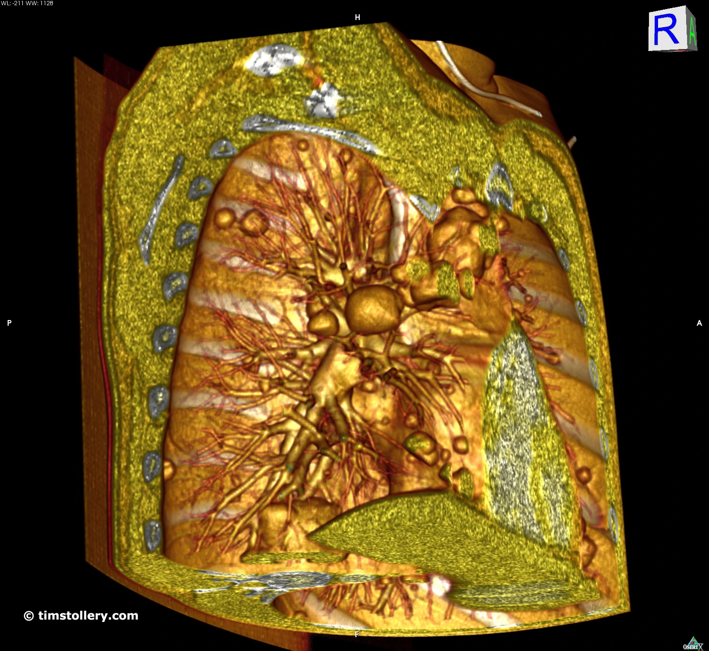
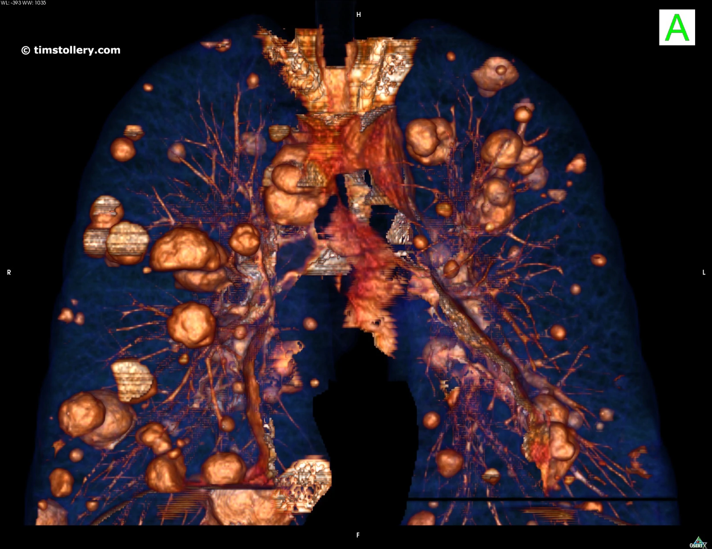

Examens et résultats
Images 3D
Images fixes et petites animations créées à partir de mon scanner de décembre 2004.
Une traversée de ma poitrine en 3D
Cette visite virtuelle révèle peu à peu les métastases, tumeurs secondaires, dans mes poumons après la peau, les muscles et la paroi thoracique. La tubulure du contraste est visible en haut au début.
Animation sans son, décrite ci-dessus.
Une rotation de mes poumons en 3D
Cette courte rotation utilise des couleurs spéciales pour montrer beaucoup plus précisément l’étendue des métastases pulmonaires.
Animation sans son, décrite ci-dessus.


